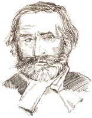

Giuseppe Verdi (1813-1901), Alman ekolüyle birlikte iki opera ekolünden biri olan İtalyan ekolünü temsil eder. Alman ekolünün aksine İtalyan Verdi, hisli, kişilik odaklı ve milliyetçi İtalyan opera geleneğinin mükemmel biçimde somutlaşmış hâli olan bir tarzı ve genel bir hassasiyeti yakalar.
İtalya, Parma’da okuma yazma bilmeyen bir hancının çocuğu olarak dünyaya gelen Verdi, erken yaşta başarı yakaladı. Yirmi altı yaşındayken, İtalyan şarkıcılar ve besteciler için kutsal kâse değerinde olan Operto isimli ilk operası, Milano’nun en ünlü tiyatrosu La Scala’da sahnelendi. Bir iki sendelemeden sonra, Nebuchadnessar’ın Kudüs’ü fethetmesi hakkında muazzam bir hikâyesi olan Nabucco (1842) eseri ile Milano’nun kalbini yeniden kazandı. Sonraki sekiz yıl boyunca, Verdi on üç opera yazdı ve müthiş bir servet kazandı. Takip eden on yılda, hızını düşürdü, ama bu süreçte de en ünlü operalarından bazılarını yazdı: Rigoletto (1853), II. Trovatore (1853) ve La Traviata (1853).

Verdi ortaya çıkana kadar, Gioacchino Rossini İtalyan operasının en övülen bestecisi olmuştu. Rossini’nin eserleri, solo sesi vurgulayan pek çok geçiş ile çoğunlukla neşeli kapriçyolardı. Verdi’ye ek olarak, 1830’larda çiçeklenen İtalyan kanon, Vincenzo Bellini, Gaetano Donizetti ve bel canto (güzel şarkı söyleme) stilinin diğer bestecileri ile tamamlandı.
Verdi, Alman operalarından daha hafif kalan aşk, kayıp ve trajedi ile uğraşan hisli melodiler ve karakter odaklı temalarla dolu operalar yazdı. Richard Wagner ve onun Alman ekolündeki taklitçileri soyutlamalar ve dev, cüretkâr sahnelerle uğraşırken Verdi, en doğrudan, gerçekçi duygusal ifadeye ve içten bir şekilde şarkı söyleyen yaşam dolu karakterlere odaklandı.
EK BİLGİLER:
1. Verdi, başlangıçta “müzikal yetenekten yoksun” bulunması nedeniyle Milano Konservatuarı’na alınmadı. Bunun yerine özel ders alması gerekmişti.
2. İtalya’nın Avusturya’dan bağımsızlığı için olan mücadele sırasında vandallar, bestecinin adını birleşik İtalya’nın ilk kralına atfen “Vittorio Emanuele, Rey d’Italia” (“Çok yaşa Vittorio Emanuele, İtalya kralı!”) için bir kısaltma olarak kullanarak kamu yerlerinde “Yaşasın Verdi!” sloganını yazılar.
3. İtalyan opera ustasının en büyük katkılarından biri, genelde çok yazılan tenordan ziyade tumturaklı bariton kısmına en dışavurumcu aryaları yazma geleneği olan Verdiyen baritona ağırlık vermesidir.